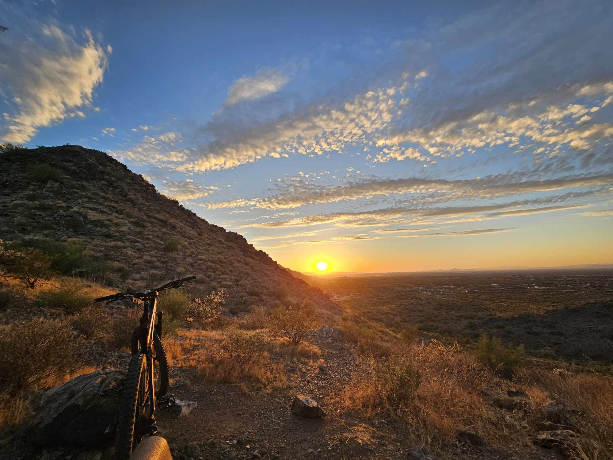
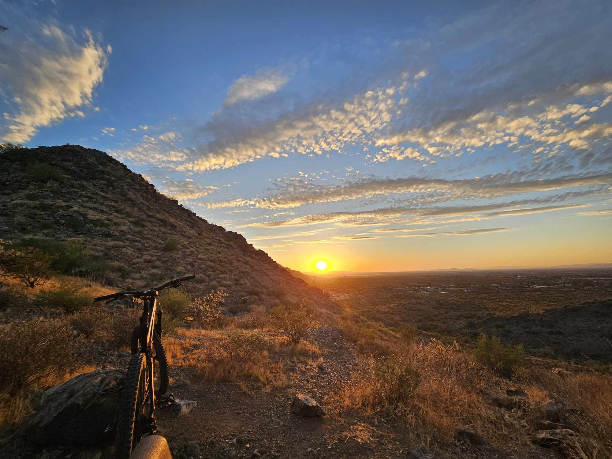

Mountain biking
is an exhilarating outdoor activity that combines physical endurance, technical skill, and a love for nature. Originating in the 1970s, it has grown into a diverse sport with various disciplines, including cross-country, downhill, enduro, and freeride. Riders navigate rugged trails through forests, deserts, and mountainous terrain, facing challenges like steep climbs, sharp descents, and unpredictable obstacles such as rocks, roots, and streams. The sport demands not only strength and stamina but also a keen sense of balance, coordination, and quick decision-making as riders must adapt to ever-changing terrain. 

Go check out my amazing mountain bike game here!
Modern Mountain Bikes
Modern mountain bikes are marvels of engineering, designed to handle the rigors of off-road cycling. Features such as suspension systems, lightweight yet durable frames, wide tires with aggressive tread, and advanced gearing systems enable riders to tackle challenging trails with confidence. Full-suspension bikes, which have shock absorbers on both the front and rear wheels, are favored for downhill and technical riding, while hardtail bikes, with suspension only on the front fork, are often chosen for cross-country adventures due to their lighter weight and efficiency on climbs.Mountain biking offers numerous benefits beyond the physical. It is a powerful stress reliever, allowing riders to disconnect from daily life and immerse themselves in the natural world. The rhythmic motion of pedaling combined with the fresh air and scenic views fosters mental clarity and relaxation. Additionally, mountain biking builds a sense of community among enthusiasts, who often gather for group rides, races, and trail maintenance projects. This camaraderie extends globally, as mountain biking continues to grow in popularity, with dedicated trails, bike parks, and events popping up in countries around the world.
Safety is a critical consideration in mountain biking. Riders are advised to wear helmets, gloves, and sometimes additional protective gear like knee and elbow pads, especially for downhill or technical trails. Hydration and proper nutrition are also essential, as rides can last for hours and cover significant elevation changes. Before setting out, bikers should inspect their equipment, ensuring that brakes, tires, and suspension are in good working condition to prevent accidents. Understanding trail etiquette, such as yielding to hikers and uphill riders, is equally important to ensure a positive experience for everyone sharing the outdoors.
age and skill
The accessibility of mountain biking makes it a sport for all ages and skill levels. Beginners can start on easy, well-maintained trails to build confidence and skill, while seasoned riders seek out advanced paths that push their limits. Many areas offer bike rentals and lessons, making it easy for newcomers to try the sport without a significant upfront investment. Whether it’s a solo ride through a tranquil forest, a competitive race, or an adrenaline-pumping downhill run, mountain biking offers endless opportunities for adventure, fitness, and connection with nature.- Trek
- fuel
- remedy
- specialized
- santacruise

Go to Top